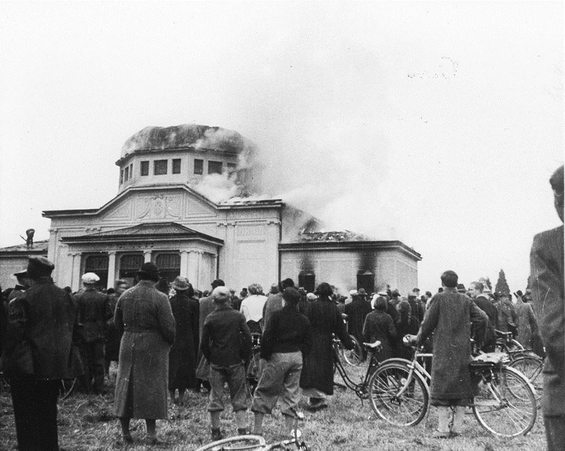
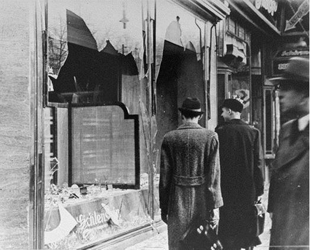
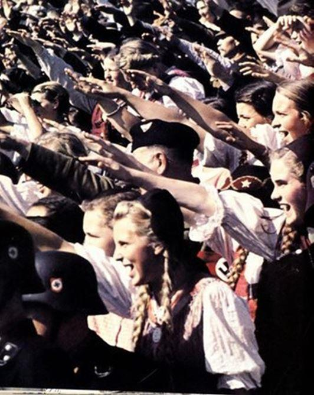
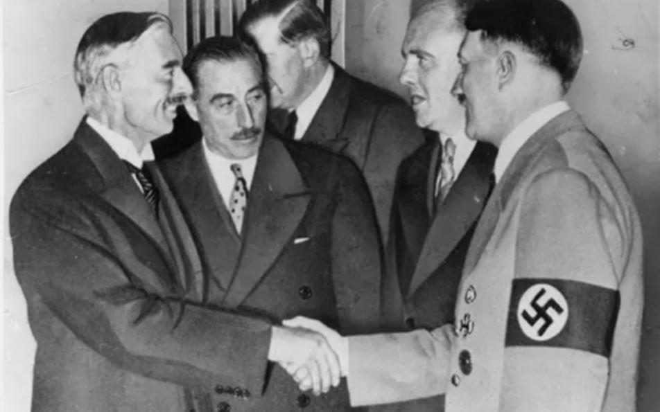

En raison du passé qui s’estompe, nous constatons depuis quelques années en Europe, une incontestable et désagréable désaffection de la jeune génération pour l’histoire du national-socialisme. Mais il est vrai qu’il est particulièrement difficile pour eux de trouver des ouvrages clairs et facilement compréhensibles. En France, ce désintérêt est particulièrement alarmant car l’Express titrait sur son journal en ligne :
« La majorité des français ignorent le nombre de juifs tués durant la Shoah » en précisant que seulement « 16 % des Français avouent même ne pas avoir entendu parler de la Shoa. 1»
Le constat est sans appel et nous prenons à notre compte cette réflexion de l’historien Thierry Féral qui signale à juste titre :
« En la matière, le temps n'a pas fait son œuvre. Car si effectivement le nazisme stricto sensu peut être aujourd'hui relégué parmi les phénomènes qu’il est envisageable d’analyser objectivement, il reste que certains thèmes dont il a été porteur et certaines attitudes qu’il a générées font toujours partie du tableau de notre époque et justifient l’inquiétude. Puissent ces actualités passées être source d’introspection et contribuer quelque peu à secouer l'indifférence !2»
Aussi, à la veille d’une réédition en langue française de Mein Kampf commentée, nous avons voulu rappeler succinctement les catégories de personnes ayant soutenus Hitler. Comme le soulignait très justement l’éminent Éric Hobsbawm, encore aujourd’hui l’avènement d’Adolf Hitler et du national-socialisme reste un phénomène qui interroge encore bon nombre d’historiens et d’universitaires :
« Le fait est que personne, mais vraiment personne, n’a pris la vraie mesure du national-socialisme d’Hitler, mouvement unique jamais vu auparavant et dont les objectifs étaient rationnellement inimaginables.3»
Au fils de ces années obscures, tous les plus proches disciples d’Hitler lui permettent l’opportunité dans un premier temps d’écraser l’opposition politique puis enfin de tenir d’une poigne de fer toutes les composantes de la société allemande. Outre les complices de la première heure, plus ou moins proches de Hitler, nombreux sont les cadres du parti nazi qui sans exception ont une culpabilité incontestable dans son accession au pouvoir, dans l’annihilation des droits civiques les plus élémentaires et de l’élimination de leurs concitoyens Juifs de toutes les sphères sociales et publiques allemandes. Responsables de multiples forfaits contre le parlementarisme démocratique de Weimar les paladins d’Hitler n’ont plus aucune limite une fois aux commandes du pays. Ils continuent de façon systématique et inexorable à asseoir non seulement leur pouvoir propre mais s’appliquent avec rigueur et sans aucun état d’âme à réaliser dans les textes et dans les faits l’idéologie nationale-socialiste.
Sans vergogne, ils laissent faire ou organisent des actions violentes contre leurs propres compatriotes Juifs. Ce ne sont que les prémices du sort qu’ils réserveront quelque temps plus tard aux populations des territoires qui seront annexés au Reich ainsi que dans les pays occupés. Dominés par leur Führer et d’une soumission absolue, voire mystique pour une grande majorité d’entre eux, tous ces paladins conçoivent, promeuvent et mettent en pratique les délires du dictateur.
Ils commettent, ou font commettre par d’autres, les pires abominations en imaginant et en organisant consciemment des programmes criminels comme l’impitoyable systémisation de la politique d’extermination des juifs, ainsi que celles d’autres peuples classés dans la catégorie des sous-hommes (Untermenschen), aboutissant inévitablement à la solution finale (l’Endlösung).
Ils ont également permis de livrer aux généraux de l’armée allemande (Wehrmacht) tous les moyens necéssaires pour s’engager dans « une guerre de conquête » qui devait apporter au Reich Allemand un espace vital à l’Est4 (Lebensraum5).
« Nous nationaux-socialistes, devons-nous attacher fermement au but que nous avons fixé à notre plitique étrangère, c’est-à-dire assurer au peuple allemand l’espace territorial nécessaire à son existence sur cette terre.6 »
Pour tous ces paladins l’adhésion idéologique au national-socialisme est l’indispensable ferment qui les lie au Führer Adolf Hitler. En conséquence, et pour mieux saisir le rôle joué par les uns et les autres dans le parcours initiatique du dictateur allemand, il est essentiel de découvrir les multiples « acteurs de cette tragédie « qui ont été ses promoteurs pour enfin devenir ses plus fidèles vassaux. Tout au début de son entrée en politique certains de ses familiers l’inspirent tandis que d’autres contribuent à ce qu’il puisse surmonter les doutes, parfois même le renoncement voir le suicide. D’autres encore tentent, mais sans succès, la manipulation.
C’est avec stupeur que l’on constate, que c’est par une suite de rencontres et d’enchainements anodins en apparence, qu’un esprit apparemment simple et au plus bas de la hiérarchie sociale, cantonné à des tâches militaires subalternes, put devenir le chef d’une horde de brutes qui lui permit d’avoir l’ascendant sur tout un peuple et de prendre le pouvoir d’un des pays les plus puissants d’Europe. Aussi je partage l’appréciation du regretté historien allemand Helmut Auerbach qui avec justesse et perspicacité a bien décrit Hitler à ses débuts :
« Le simple petit soldat, sans métier, s’était plutôt involontairement engagé dans une carrière politique, il y a été poussé. Favorisé par sa posture nationaliste populiste, qui s’était raffermie durant la phase révolutionnaire de Vienne, il s'est naturellement intégré au mouvement de Munich. Le traumatisme national de la défaite de 1919 était également le traumatisme personnel de Hitler et de ce fait il a pu se sentir comme la personnification du destin national. Son fanatisme, son énergie, son talent virtuose d’agitateur et une montée immédiate de soutien l’ont rendu populaire. (…) et accroit son exigence d’être le Führer ».
Les apôtres du mal
Dans ses débuts, Hitler se repose sur une poignée de fidèles qui sera ce socle solide de compagnons proches et dévoués dont il a absolument besoin. Une fois devenu le chef d’une masse de fanatiques, ce ne seront pas moins de plusieurs milliers de nazis qui sauront alors « travailler en direction du führer7» comme le souligne fort justement l’historien Ian Kershaw.
Parmi eux se trouvent les membres de la haute bourgeoisie, fortunés mécènes8 sans scrupules à la tête de petites, moyennes et grandes fortunes issues des dynasties industrielles allemandes et étrangères, grands propriétaires terriens, affairistes consommés, sans lesquels le parti nazi n’aurait pu survivre matériellement, car sans argent il n’y aurait jamais eu Hitler. C’est par leur soutien, qu’Hitler perçoit les subsides essentiels à la survie du parti. A ses débuts, il perçoit de grosses sommes d’argent provenant essentiellement de propriétaires de petites ou moyennes entreprises (bien que très tôt quelques grandes fortunes lui apportent leur appui). Aussi est-il fondamental de préciser que, contrairement à de nombreuses affirmations erronées, l’aide apportée par les grosses fortunes industrielles ne se fit que plus tardivement et en deux temps.
En effet, les capitalistes allemands dans leur ensemble ont tout d’abord été dissuadés par la rhétorique « socialiste » en cours au parti nazi dans les années 1920 et se méfiaient des députés du NSDAP qui avaient à plusieurs reprises voté avec les partis de gauche. La majeure partie des plus importants industriels allemands a d’abord privilégié de miser sur les mouvements patriotiques et conservateurs comme le Parti populaire national Allemand au pouvoir. Cela s’explique par le fait que depuis la fin des Hohenzollern9, et l’avènement de la démocratie parlementaire de Weimar et les tentatives de bolchevisation de la société, leurs faveurs politico-financières vont tout naturellement en direction des mouvements conservateurs réactionnaires ; chantres d’un retour vers un gouvernement autoritaire, voir monarchiste. Malgré cela, certains parmi ces « élites traditionnelles » de la sphère industrielle et commerciale allemande se hasardent d’entraîner Hitler dans le camp conservateur et tentent de « l’attirer vers l’État », mais se trouvent confronté à l’intransigeance d’Hitler. En revanche, et par calcul politique, ils apporteront une aide substantielle à certains des paladins comme Himmler, Göring ou encore Walter Funk supposés plus influençables et considérés comme modérés (sic). Ce n’est qu’à compter de 1931, et une fois que se dessinaient des victoires électorales du parti national-socialiste, que le soutien de certaines grandes entreprises en faveur d’Hitler se précise mais non de façon absolue. Pragmatiques, les capitaines d’industrie allemands continuent toujours « d’arroser » toutes les autres composantes antidémocratiques dans le Reich. Ce n’est véritablement qu’à l’issue de la prise de pouvoir d’Hitler et de ses paladins, que l’on peut parler d’un véritable appui financier massif en faveur du parti national-socialiste des travailleurs allemands (National socialistishe Arbeiter Partei-NSDAP).
C’est ainsi qu’en février 1933, Hitler et Göring reçoivent plus de deux douzaines de représentants du monde économique, et à l’issue d’un long discours du Führer, dans lequel il fait campagne pour la propriété privée et contre les expériences économiques, les entrepreneurs présents promettent un don total de trois millions de Reichsmarks pour la prochaine campagne électorale.
Dans les années qui vont suivre, la coopération entre nazis et industriels entre dans une nouvelle ère qui s’avèrera très fructueuse pour les deux parties. Le cercle des dirigeants réactionnaires, issus du monde industriel et bancaire allemand ainsi que du grand secteur immobilier, profite sans vergogne d’Hitler et de ses séides afin de pouvoir s’enrichir sans compromission et mettre en œuvre leurs intérêts économiques propres. Non seulement par l’augmentation des commandes de l’État, en vue de préparer les futures guerres d’agressions, où le régime nazi fera grimper leurs profits de façon vertigineuse, mais également par l’expropriation et la confiscation des entreprises et des biens ayant appartenu à des industriels ou des commerçants Juifs. Ce qui n’est pour leur déplaire, car elle éradique du même coup certains concurrents. Pendant la guerre, rares seront les entreprises allemandes n’ayant pas eu recours au service du travail obligatoire (Reichsarbeitsdient) de Konstantin Hierl, aux prisonniers de guerre de l’Est fournis par Fritz Sauckel et aux déportés provenant des camps de concentration fournis par la Himmler, autant « d’esclaves » à leur entière disposition leur permettant de continuer à toucher de bons profits.
D’autre part, nous ne renoncerons pas de citer les hommes politiques issus des mouvements réactionnaires et aristocratiques allemands, opportunistes ambitieux et cyniques. En voulant détruire la jeune république démocratique de Weimar ils sont, à leur manière, les principaux responsables de l’arrivée d’Hitler au pouvoir. Ces hobereaux aveuglés par leur soif de pouvoir étaient convaincus de leur arrogante supériorité intellectuelle, et de classe sociale supposée, sur ce misérable parvenu autrichien.
« (…) Sans l'aide inattendue de ses opposants politiques, Hitler n'aurait jamais légalement -ou peut-être du tout- pu devenir chancelier du Reich.10»
Tous jugeaient qu’Hitler était le dupe de leurs combinaisons politiques, mais ils en seront tous pour leurs frais, car ceux qui auguraient pouvoir se servir de lui comme d’une marionnette, découvrent à leurs dépens sa duplicité machiavélique. Quant au corps militaire de la défense du Reich (Reichswehr puis de la Wehrmacht) nombreux sont les officiers supérieurs qui adhèrent aux thèses antibolchéviques et antisémites des nazis. Au même titre que pour d’autres mouvements réactionnaires, ils collaborent de façon notable avec les nazis pour défendre les questions qui leurs sont fondamentales : la révision du Traité de Versailles, le réarmement, la lutte contre la démocratie parlementaire et la lutte contre les mouvements bolchéviques. Finalement, la grande majorité des militaires allemands, tous grades confondus, soutiennent sans sourciller le Führer. Une fois le IIIe Reich proclamée, les hauts commandements respectifs des trois armées de terre, de la marine et de l’air (Oberkommando des Heeres, der Marine und der Luftwaffe) décrochent à leur grande satisfaction des moyens colossaux pour doter la future Wehrmacht d’armements nécessaires pour la guerre d’agression voulue par Hitler et qui s’achèvera en la plus grande tragédie du XXe siècle.
Ne négligeons pas toutes les « petites mains », ces « serviteurs fidèles du quotidien » d’Hitler qui furent ses plus proches personnes de confiance et d’exécution comme ses gardes du corps, secrétaires, chauffeurs, hommes de mains, adeptes de la première heure dont il s’entourait exclusivement et qui lui vouaient une admiration et une dévotion sans bornes. Tous ses proches collaborateurs et collaboratrices lui permettent de gérer les problèmes du quotidien lui laissant la possibilité de se consacrer entièrement à sa « destinée ».
Trop souvent délaissé par les historiens, il faut souligner la place qu’occupent un certain nombre de femmes lui étant particulièrement dévouées.
Leni Riefenstahl, cinéaste phare durant les premières années du national-socialismeIl est essentiel de rappeler le rôle des femmes allemandes au sein du Reich hitlérien, car non seulement elles ont voté en force pour Hitler mais elles se sont activement engagées au sein du parti des travailleurs allemands (Deutsche Arbeiter Partei-DAP) dès 1919. C’est seulement au début des années 1930 que les femmes commencent à adhérer de façon plus conséquente au parti. À ce propos, il est reconnu que les bons résultats du NSDAP obtenus aux élections de 1932 et 1933 sont aussi à mettre à leur profit grâce à une très forte participation au vote.
Malgré le rôle prédestiné et réducteur de la « femme allemande mère et femme au foyer », imposé idéologiquement par les nazis, très nombreuses furent les femmes allemandes qui virent dans leur activisme national-socialiste une éventuelle voie d’émancipation. Malheureusement les travers idéologiques des dirigeants nazis ne leur laissent que très peu d’espace et jugulent rapidement toute velléité d’égalité malgré leurs nombreuses tentatives d’indépendance. Cependant quelques-unes auront plus tard un rôle non négligeable dans les organisations nazies leur étant dédiées.
Il est clair que la contribution des femmes allemandes à la montée du nazisme n’est assurément pas à négliger. En effet, durant toute sa vie politique, elles lui sont d’une très grande utilité et occupent une place non négligeable dans sa vie.
Il faut retenir que ce qui caractérise la grande majorité des profils de ces paladins, c’est que sans les crises qui ont secoué la jeune et fragile République de Weimar et sans leur engagement total dans l’extrémisme politique ; ils n’auraient jamais pu être en mesure atteindre des tels sommets de responsabilités et leurs noms n’auraient jamais paru dans les livres d’histoire.
Gratifiés de pouvoirs et d’argent, tous et toutes doivent leur fulgurante ascension et réussite sociale à Hitler et aux plus importants de ses paladins. Ils leur ont permis de sortir de l’ombre et d’éviter de subir des carrières modestes voir médiocres, pour occuper en tant que membre du NSDAP des fonctions auxquelles ils n’auraient pu prétendre en temps normal. Pour remercier leur maître, et assouvir leurs penchants de puissance, ils suivront aveuglément les directives du parti. Tous sans exception, laisseront libre cours à leur imagination pour anticiper les vœux du dictateur et prendre des décisions lourdes de conséquences. Qu’elles qu’aient été les circonstances, ils sont tous comptables devant le tribunal de l’histoire des crimes abjects perpétrés contre des millions d’hommes, de femmes et d’enfants et leurs noms sont à tout jamais associés aux forfaits les plus ignominieux ordonnés et perpétrés au nom d’une idéologie perverse et dévoyée.
La responsabilité méconnue des alliés
Il aurait été intellectuellement préjudiciable de ne pas rappeler que l’ascension de Hitler et du national-socialisme ne sont pas l’unique résultante de la résistance allemande aux nombreuses conséquences du Traité de Versailles. Mais surtout les fruits d’une multitude d’erreurs et de jugements politiques erronés commis par certains gouvernements occidentaux d’alors. En effet, les calculs politico-économiques des États-majors et des politiciens des gouvernements alliés de la Première Guerre Mondiale à l’égard de l’Allemagne n’étaient pas exempts de duplicités. Ainsi la Grande-Bretagne, et surtout la France toujours prompte à donner des leçons de démocratie et à délivrer des messages humanistes universels, entrainent les autres alliés à s’opposer à la demande d’unification de l’Autriche et de l’Allemagne en toute contradiction des thèses développées par le président américain Wilson.
La tutelle sur la région de la Sarre11, puis la tentative de regrouper les territoires de la rive gauche en un gouvernement autonome pro-français, ne sont que quelques-unes des tentatives (erreurs ?) manifestes commises dès les années 1920 par les gouvernants français successifs d’après-guerre pour affaiblir le Reich.
Pire encore :
« En 1938 et en 1939 la France n’avait pas fait un geste pour défendre l’indépendance de la Tchécoslovaquie, (…) La France n’était pas capable de venir en aide à la Pologne. On ne gagne pas une guerre en se croisant les bras, tandis qu’un allié plus faible supporte tous les coups de l’adversaire. (…) Ces divisions (françaises) s’enterrent dans la ligne Maginot, et l’armée française assista en spectateur à l’agonie de la Pologne, qui dura à peine trois semaines.12 »
Les britanniques quant à eux :
« S’étaient montrés conciliants, désireux de négocier (…) à faire des concessions aux dépens des français13 »
Comme le souligne judicieusement l’historien Ian Kershaw ; alors même que Hitler venait de réinstaurer le service militaire obligatoire et de déclarer publiquement sa décision de réarmer l’Allemagne (en totale violation du Traité de Versailles) ces actes n’avaient donné lieu qu’à des réprimandes de pures formes. Sans la moindre retenue, les britanniques concluront des accords entre anciens belligérants modifiant formellement des dispositions fondamentales du Traité de Versailles. En définitive, la France et les autres Alliés accepteront lâchement et sans véritablement s’opposer aux ultimes étapes de conquête de Hitler qui mèneront irrémédiablement le monde au bord du gouffre. Pour sa part Benito Mussolini, qui d’abord proche des intérêts franco-britanniques, ne tarde pas à rejoindre quelque temps plus tard Hitler après que ses anciens alliés se soient opposés à sa politique d’expansion coloniale en Abyssinie. Cette crise diplomatique mènera à la discorde et à la faiblesse militaire des Franco-Britanniques en Europe et contribuera à compromettre définitivement la sécurité collective des démocraties européennes face à l’Allemagne nazie. Nous ne pouvons pas non plus effacer de nos mémoires l’erreur de jugement politique de nombreux dirigeants socialistes, du parti communiste allemand et enfin, on ne peut passer sous silence, la position ambivalente et attentiste des États-Unis avec leur politique de neutralité qui ne prit fin qu’avec leur entrée en guerre contre le Japon en 1941. Ces quelques faits avérés, parmi tant d’autres, n’exemptent bien évidemment en rien la responsabilité des trop nombreux figurants et responsables politiques et militaires allemands dans cette catastrophe mondiale, mais éclairent le lecteur sur la duplicité et le rôle de tous les acteurs de l’époque. Intrigant maléfique, Hitler a su exploiter la faiblesse criminelle et les désaccords continus entre les Alliés pour opportunément avancer ses pions et mettre à profit ses réussites territoriales pour son unique projet de guerre de conquête et d’anéantissement des Juifs d’Europe.
A.W.
NOTES ET RÉFÉRENCES
1. Voir : « La majorité des français ignorent le nombre de juifs tués durant la Shoah ». L’Express avec AFP, Actualités, Société, Devoir de Mémoire, publié le 22.01.2020.
2. Féral, National socialisme, p.13.
3. Article du 24.01.2008 paru dans la London Review of Books.
4. Extraits de Mein Kampf : « Nous avons donc, nous, nationaux-socialistes, répudié à dessein l'attitude adoptée par l’Allemagne d’avant-guerre en matière de politique étrangère. Nous avons mis fin à la marche perpétuelle du germanisme vers le Sud et l’Ouest de l’Europe, et avons tourné les yeux vers les terres de l’Est. Nous avons mis un terme à la politique coloniale et commerciale d’avant-guerre et nous sommes passés à une politique territoriale de l’avenir. » Mais quand nous parlons aujourd'hui de territoires nouveaux en Europe, nous devons penser principalement à la Russie et aux États limitrophes qui lui sont soumis. » cité dans Nuremberg, Vol. I, p. 94.
5. L’espace vital est un concept géopolitique créé par des théoriciens géographes allemands au XIXe siècle. Il est particulièrement populaire dans les milieux impérialistes allemands avant d’être incorporé au nazisme. Lié au darwinisme social, il renvoie à l’idée de territoire suffisant pour, dans un premier temps, assurer la survie.
6. Adolf Hitler, Mein Kampf, p. 554 cité dans Nuremberg, Vol. IV, p. 544.
7. Voir : Ian Kershaw, Hitler 1889 – 1945, Grandes Biographies, Paris, Flammarion, 2008, p. 315.
8. « Les identités des donateurs sont pour la majorité des cas totalement inconnus. La raison en est toute simple : bon nombre de ces patrons d’entreprises ont voulu rester dans l’ombre et pour ne pas divulguer leur nom les trésoriers des différentes sections du parti camouflèrent dans leurs pièces comptables le nom des donateurs en précisant qu’il s’agissait de dons anonymes ». Voir : Matthias Rösch, Die Münchener NSDAP 1925-1933, Eine Untersuchung zur inneren Struktur der NSDAP in der Weimarer Republik. München, R. Oldenburg Verlag, 2002. p. 475.
9. La maison des Hohenzollern est une des plus vieilles dynasties de la haute noblesse allemande et a fourni de nombreuses têtes couronnées dont Guillaume II le dernier empereur du Reich allemand. Voir : Henry Bogdan, Les Hohenzollern : La dynastie qui a fait l’Allemagne (1061–1918). Paris, Librairie Académique Perrin, 2010.
10. Voir : Voir: Richard Breitman, Deutschland unter der herrschaft des Nationalsozialismus, Bd 7, Deutsche Geschichte in Dokumenten und Bildern, Max Weber Stiftung, 2016, p. 1.
11. A l’issue de la défaite de l’Empire allemand, les puissances victorieuses négocièrent l'avenir de la zone industrielle sarroise. La Grande-Bretagne acceptait l’idée de l’annexion pure et simple de cette région par la France. Les propositions américaines ont finalement prévalu et dans la nuit du 9 au 10.04.1919, la proposition d’une séparation de 15 ans de la zone industrielle pour compenser les dommages causés par la guerre française et l’organisation d’un référendum ultérieur sont actées. L’accord conclu était inscrit dans le Traité de Versailles et signé par le Reich allemand. Voir : Deutsches Reichsgesetzblat 1919, Chapitre 4, Art 45 et suivants, p. 687, relevé dans https// : www.archiv.jura.uni-saarland. ; Outre le lien économique, la France se préoccupe de mettre en place une certaine domination culturelle et tente d’influencer les futurs électeurs pour un rattachement à la France en créant des domaines majoritairement francophones. À cette fin, les autorités françaises créent des Écoles Domaniales de langue française (conformément à l'Annexe de l’article 46 du Traité de Versailles, Ch. I du 28.06.1919 § 14). L’État français peut ainsi, et à tout moment, créer et maintenir des écoles élémentaires ou des écoles techniques pour le personnel en annexe des mines, et faire suivre les cours de français par un professeur choisi par lui selon un programme qu'il définit. […]. Elles joueront un rôle important dans le débat sur le retour du territoire à l’Empire allemand. Voir : Pierre Jardin, L’occupation française en Rhénanie, 1918-1919. Fayolle et l’idée Palatine, Revue d’histoire Moderne et contemporaine, T. 33, n° 3, 1986, pp. 402-426.
12. Voir : René Lauret, Notre voisin l’Allemand. Deux peuples s’affrontent, le XXè siècle, Paris, Les nouvelles Editions latines, 1961, p. 105-106.
Partager cette page